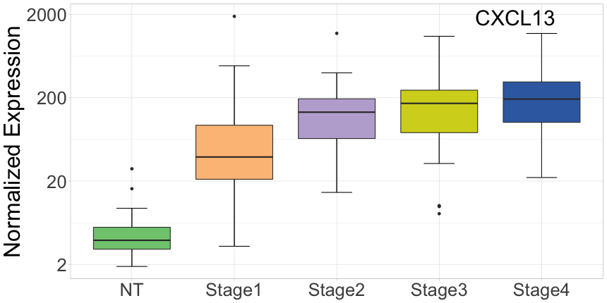
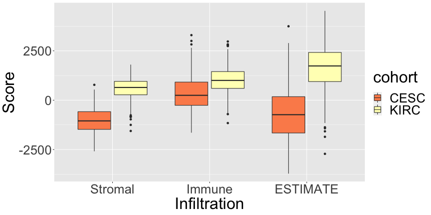
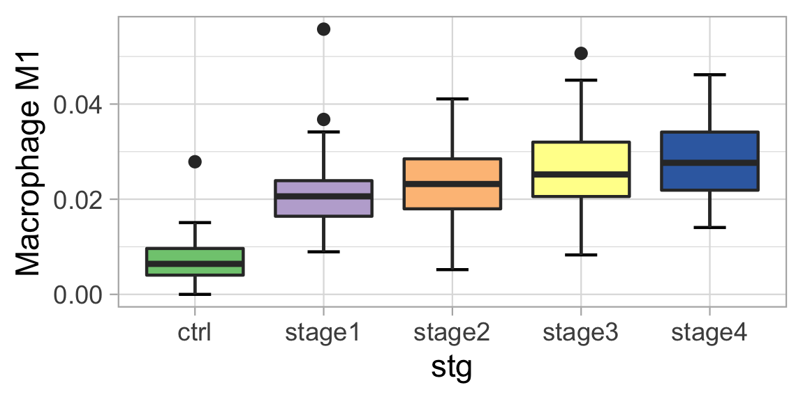
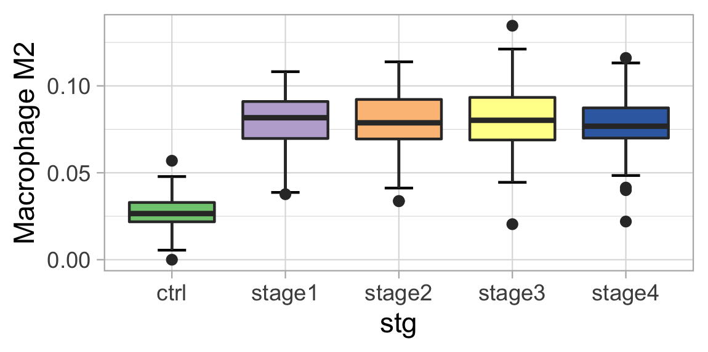
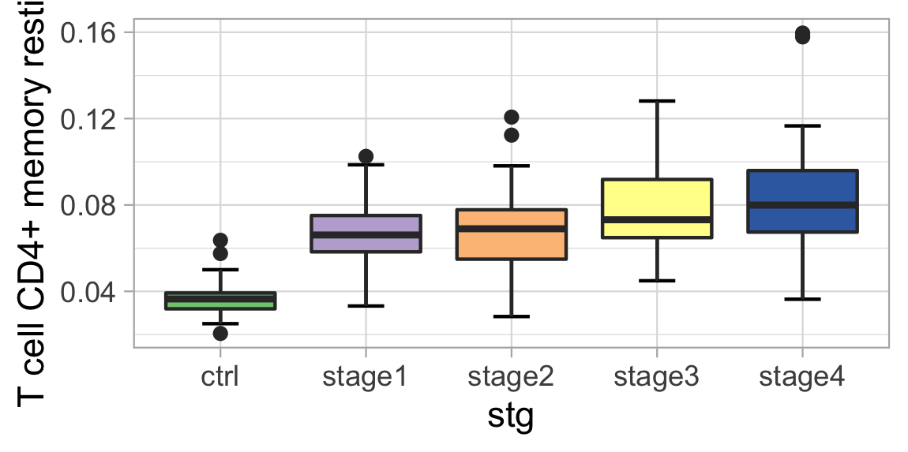
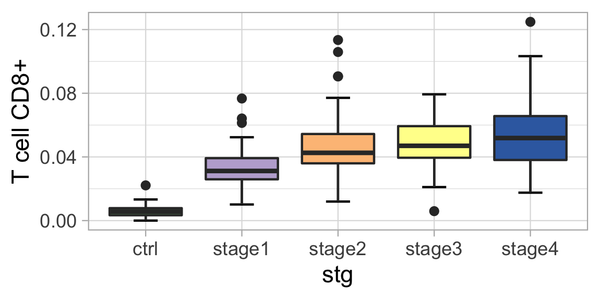
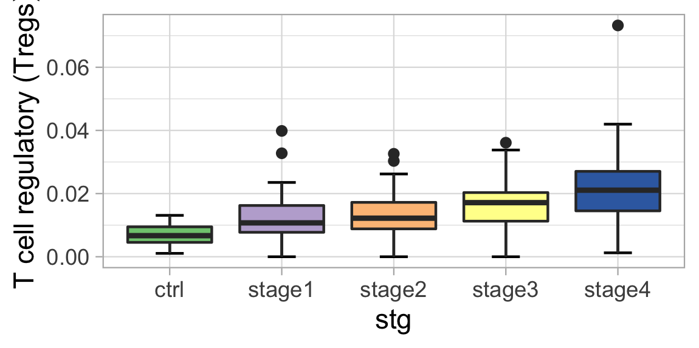
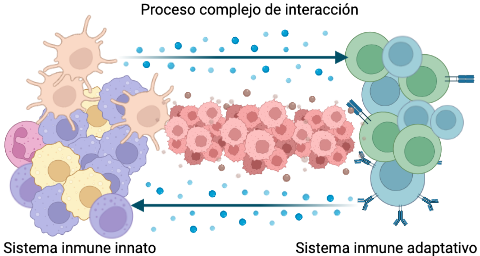
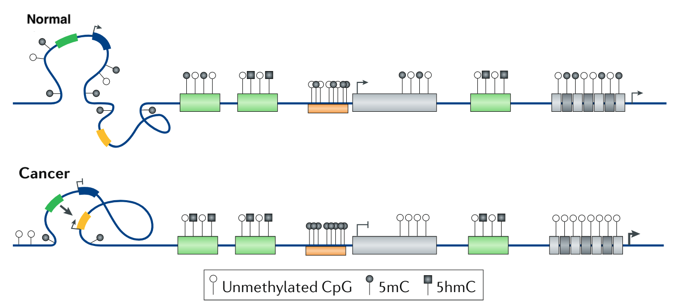

Cambios en los patrones genéticos y epigenéticos en
las etapas de progresión del cáncer
José María Zamora Fuentes
Universidad Nacional Autónoma de México
Junio, 2022
Comité Tutoral: Dr. Jesús Espinal Enríquez Dra.
Patricia García López Dr. Luis Mendoza Sierra
Tópicos
Introducción
Hipótesis
Objetivo
Métodos y materiales
Resultados
Resumen
Cáncer
Progresión del Cáncer
[1] Stephen B. Edge, et al. “The American
Joint Committee on Cancer: the 7th Edition of the AJCC Cancer Staging
Manual and the Future of TNM”. Annals of Surgical Oncology 17. 6(2010):
1471–1474.
Regulación genética y epigenética
Fuentes de datos
TCGA (The Cancer Genome Atlas)
11,300 pacientes
más de 30 tejidos de cáncer.
Secuenciación RNA
mRNA
Secuenciación de 450K sitios CpG
[1]The Cancer Genome Atlas Research
Network. “Before and After: Comparison of Legacy and Harmonized TCGA
Genomic Data Commons Data”. Cell Systems. 2019;9(1):24-34.e10.
Hipótesis
Existen posibles mecanismos de control regulatorio
llevados a cabo por miRNAs y por metilación sobre genes involucrados en
la progresión del cáncer.
Objetivo
Encontrar genes clave que son afectados por
miRNAs o por metilación, los cuales
cambian su programa regulatorio y de co-expresión
durante la progresión del cáncer.
Métodos y materiales
Flujo de trabajo
Carcinoma Renal
Cáncer “silencioso” (ausencia de síntomas).
80% de los casos se diagnostican de manera incidental en imágenes
solicitadas por otros motivos,
de estos, el 20 % son diagnosticados en etapas avanzadas,
la tasa de mortalidad es del 95% a los 5 años.
[2]James J. Hsieh, et al. “Renal cell
carcinoma”. Nature Reviews Disease Primers 3. 1(2017).
CRcc - Características Moleculares
85% se encuentran en células claras.
Línea principal: Mutaciones en VHL.
Pérdida en VHL no induce ccRC.
Biomarcadores de metilación no especificados.
Histopatalogía con alta degradación de MEC (regado de estroma)
[2]James J. Hsieh, et al. “Renal cell
carcinoma”. Nature Reviews Disease Primers 3. 1(2017).
Muestras de ccRC
Control
Etapa I
Etapa II
Etapa III
Etapa IV
72
272
59
123
82
Resultados
CXCL13 en KIRC

[1]Zamora-Fuentes JM,
Hernández-Lemus E, Espinal-Enríquez J. Gene Expression and
Co-expression Networks Are Strongly Altered Through Stages in Clear Cell
Renal Carcinoma. Front Genet. 2020;11:578679. Published 2020
Nov 3.
itk en KIRC
[1]Zamora-Fuentes JM,
Hernández-Lemus E, Espinal-Enríquez J. Methylation-driven gene
networks in Clear Cell Renal Carcinoma (Enviando).
Infiltración en KIRC

[1]Yoshihara K, Inferring tumour purity
and stromal and immune cell admixture from expression data. Nat Commun.
2013;4(1):2612.
Población celular: Macrofagos M1 y M2


Población celular: Células del sistema inmune



Microambiente Tumoral

Discusión
Patrón biológico encontrado: Funciones clave del sistema inmune esta
afectado.
La metilacion sobreexpresa ITK. El sistema inmune esta activado
CXCL13. La afectación del sistema inmune progresa de manera
específica en el tumor.
El sistema inmune podría estar cambiando espacial y estructuralmente
el tumor.
Trabajo futuro
Escribir la tesis doctoral.
Agradecimientos
Comité tutoral.
Comité del exámen de candidatura.
CONACYT (cvu 267236).
UNAM, IE e INMEGEN.
Resultados académicos
1– Curso de Inmunología 2–Zamora-Fuentes JM, Hernández-Lemus E, Espinal-Enríquez J.
Methylation-driven gene networks in Clear Cell Renal
Carcinoma (Enviando). 3–Zamora-Fuentes JM, Hernández-Lemus E and Espinal-Enríquez J
(2022) Oncogenic Role of miR-217 During Clear Cell Renal
Carcinoma Progression. Front. Oncol. 12:934711. doi:
10.3389/fonc.2022.934711 4–Zamora-Fuentes
JM, Hernández-Lemus E, Espinal-Enríquez J. Gene Expression
and Co-expression Networks Are Strongly Altered Through Stages in Clear
Cell Renal Carcinoma. Front Genet. 2020;11:578679. Published
2020 Nov 3. 5– González-Espinoza A,
Zamora-Fuentes JM, Hernández-Lemus E, Espinal-Enríquez J.
Gene Co-Expression in Breast Cancer: A Matter of
Distance. Front Oncol. 2021;11:726493. Published 2021 Nov 17.
7– Andonegui-Elguera SD, Zamora-Fuentes
JM, Espinal-Enríquez J, Hernández-Lemus E. Loss of Long
Distance Co-Expression in Lung Cancer. Front Genet.
2021;12:625741. Published 2021 Mar 10.
[1]Wang S, et al. Rab25 GTPase:
Functional roles in cancer. Oncotarget. 2017;8(38):64591-64599
Valores Beta
[1]Modificado de Michalak EM, Burr ML,
Bannister AJ, Dawson MA. The roles of DNA, RNA and histone methylation
in ageing and cancer. Nat Rev Mol Cell Biol. 2019;20(10):573-589.
Metilación

[1]Modificado de Michalak EM, Burr ML,
Bannister AJ, Dawson MA. The roles of DNA, RNA and histone methylation
in ageing and cancer. Nat Rev Mol Cell Biol. 2019;20(10):573-589.